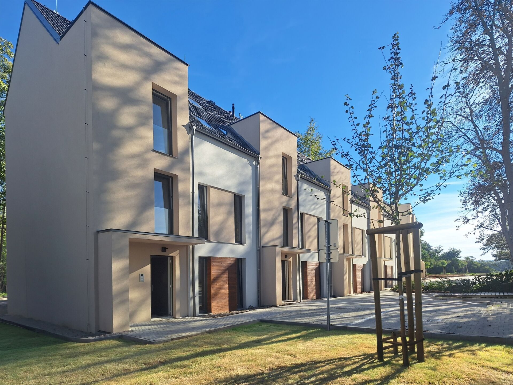
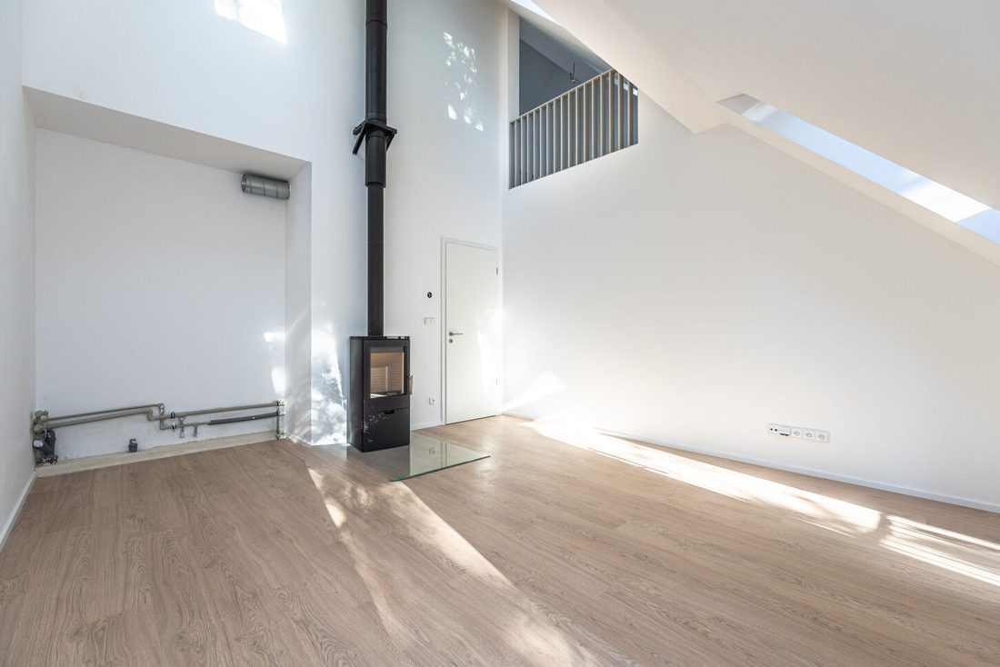
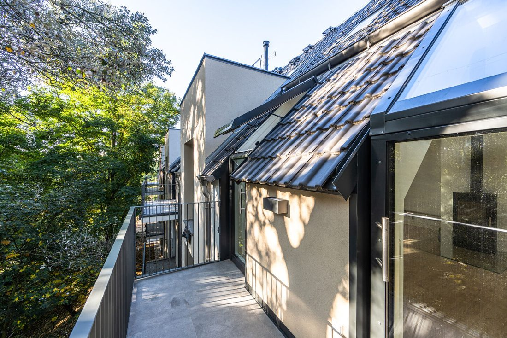
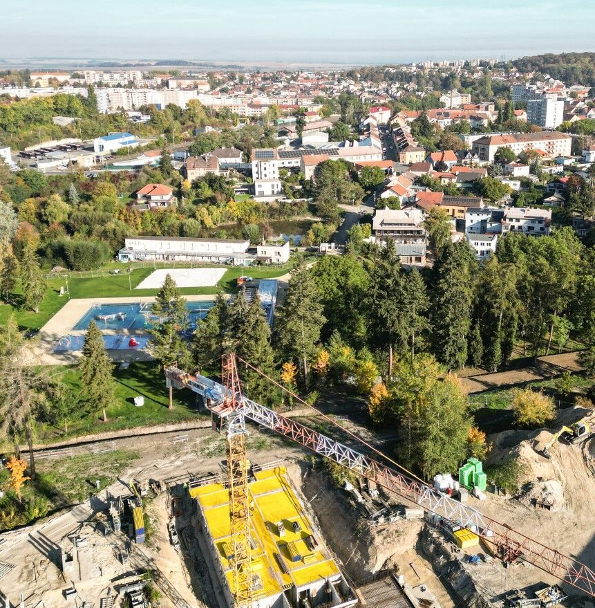
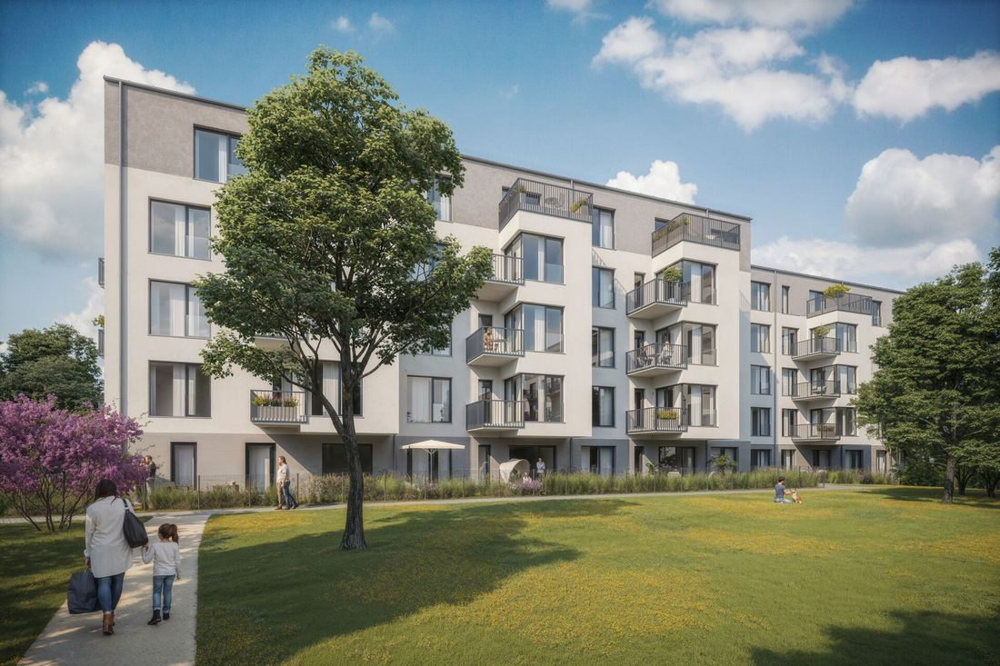
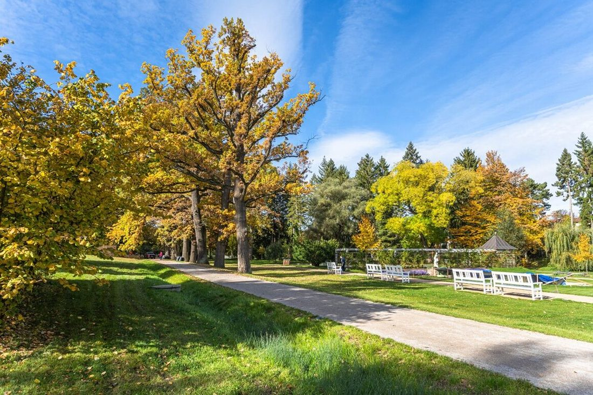
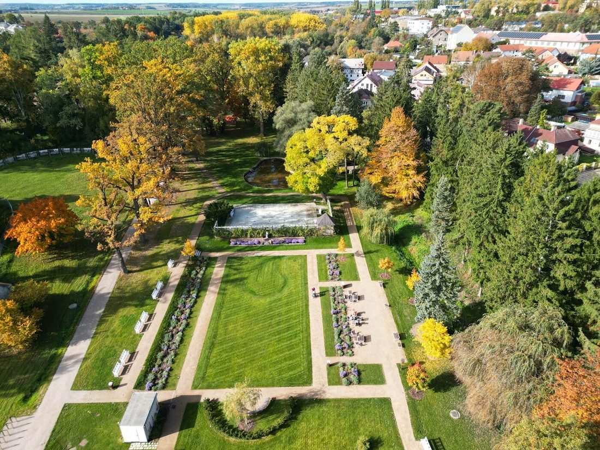

Mezonet stojí 89 tisíc za metr, ve druhé etapě je metr za 111 až 161 tisíc. Za cenu 3+kk o 70 m² je tu o 23 metrů víc, pokoj navíc a klíče koncem roku. Z fotek se ale nepozná, že obývák je otevřený až pod střechu, a prázdný byt bez kuchyně si kupec nezařídí sám. Video ukáže výšku a dopolední světlo a byt už ve variantě A zařídíme v rozpohybovaných vizualizacích.
Druhá etapa se prodává ze stavby, kde je dnes první patro z pěti. Kupec potřebuje vidět, o čem píšeš: park a koupaliště za domem, centrum pěšky a autobus na Veleslavín. Od varianty B nad dnešní stavbou ve videovizualizaci vyroste celý dům podle podkladů architekta, ve skutečném záběru z dronu.



V 10:00 stojí slunce na 152°, 22° nad obzorem, skoro čelně proti balkonům mezonetů. Předpověď dává jasno do jedenácti a od poledne mraky, proto začínáme dronem. Park a náměstí ze země jdou i pod mrakem. Natáčení je ve všech variantách stejné.
Byty Borovského ze strany balkonů, park, koupaliště, stavba druhé etapy a výhled z výšky 5. NP.
Obývák a galerie, balkon, pokoje a horní patro.
Kumpánova zahrada, cesta do centra, zastávka linky 388. Ty na kameru, pokud chceš.
Dron ze strany balkonů nad korunami a nad střechu. Titulek: poslední mezonety 4+kk. V B a C i rozpohybované exteriéry.
Galerie, kamna, slunce z vikýřů. Stejný záběr se promění v zařízený byt.
Vikýřem ven do korun stromů. 4,4 m², jihovýchod.
Ložnice 15,8 a 14 m², pokoj, koupelna s vanou, schodiště a galerie.
4+kk · 93 m² · parkovací stání · předání koncem roku · tvůj kontakt.
Slaný shora: park, koupaliště a stavba. V B a C nad ní ve videovizualizaci patro po patru vyroste dům.
Dron ve výšce budoucího 5. NP, otočka k parku a městu.
Kumpánova zahrada v podzimních barvách, koupaliště hned vedle. V B a C videovizualizační prostřihy, třeba park a koupaliště v létě.
Pěšky do centra, autobus 388 na Veleslavín. V B a C animovaná mapa s minutami.
Stejný záběr jako na začátku · verdeslany.cz · tvůj kontakt.
Komentář a texty titulků napíšeme po výběru varianty a dostaneš je k odsouhlasení.



Obě videa natočíme z jednoho výjezdu a dron, park i cesta do centra poslouží oběma filmům. Proto jsou dvě videa levnější, než kdybychom je točili zvlášť. A s Gepardem spolupracujeme dlouhodobě. Ceny jsou bez DPH, doprava je v ceně.
K variantě A nebo B: 3D prohlídka mezonetu za 2 500 Kč bez DPH.